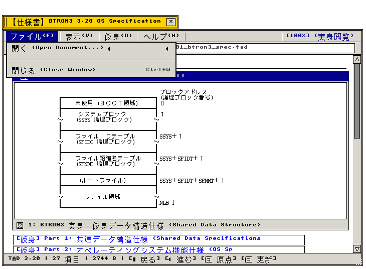
03 — Browser / TAD reader
ブラウザ (Browser) 公開中
BTRON3 準拠の TAD ハイパーテキスト・電子ブック閲覧器です。ふせん移動と履歴スタックと埋め込み図形を、このページの仕様書と同じ文書モデルの上で描きます。
The document viewer that reads this site's own specification pages as native TAD records.
閲覧器の仕様 →B-System · BTRON 3.20 · Media OS
メディアは、後から載せるものではありません。 OS の約束の、いちばん前にあるものです。 BeOS のメディア OS 設計を、BTRON3 の実身／仮身モデルで作り直しました。 平面ごとの CPU 予算と、ハードリアルタイムを最初の一行から数えています。 1 MB 以下の組み込み機から SMP のワークステーションまで、同じ C99 の出典です。 速いのは、軽いから。軽いのは、メディアのためだけに設計したからです。
Multimedia is not something you bolt on. It is something you design in. B-System is a media operating system in the sense BeOS showed — one kernel, one hypermedia document model, and hard CPU budgets per plane, counted from the first line of the kernel instead of forgiven at the last. The same standard C99 sources boot an embedded MCU under a megabyte, where interrupt determinism holds below five microseconds and nothing is allocated after boot, and a 64-bit UEFI symmetric-multiprocessing workstation, where every process keeps its own address space and messages still cross without a context switch. Fast, because it is lean. Lean, because it was never anything but media.
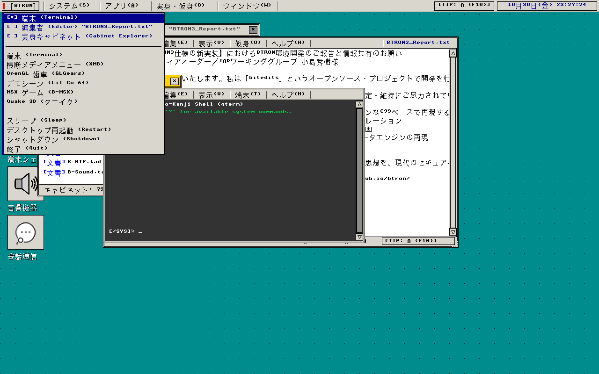
下のすべての窓は、この机の上にあります。十九の札は別々の製品ではなく、同じ約束の十九の使い方です。 Every window on this page is cut from the framebuffer of one operating system, on this desk, at this resolution.
Editor · Terminal · Browser · Cabinet · Volumes
メディアの前に、机には五つの標準窓があります。文書編集、端末、ブラウザ、キャビネット、ボリューム — 書く、起動する、読む、並べる、載せるという五つの基本動作が、そのまま五つの窓になりました。創作アプリもゲームもこの上に載っています。オーケストラのセッションファイルは文書編集が読む文書であり、キャビネットが並べる実身であり、ボリュームが載せるブロックの上にあります。だからこの部を最初の部に据えました。なお窓枠には二つの様式があります。既定は BeOS と CWM 調のスライディングタブ、もう一方が PMC Cho-Kanji の立体ベベルで、下の図版はその両方から採っています。
Five standard windows come before the media products: write, launch, read, file, mount. An operating system that cannot show its own editor and terminal has nothing to put media on. Every plate is that window as it drew on the running desk, in either of the two compiled window-chrome styles.
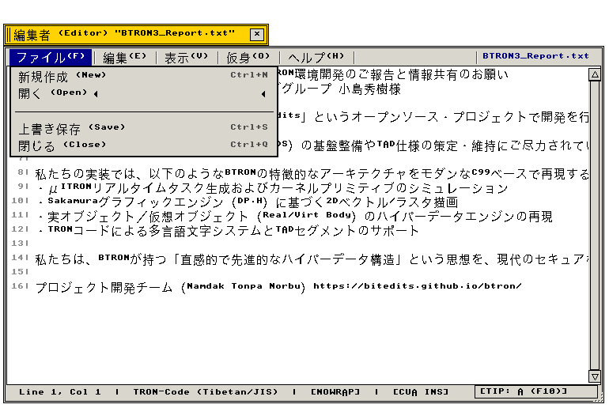

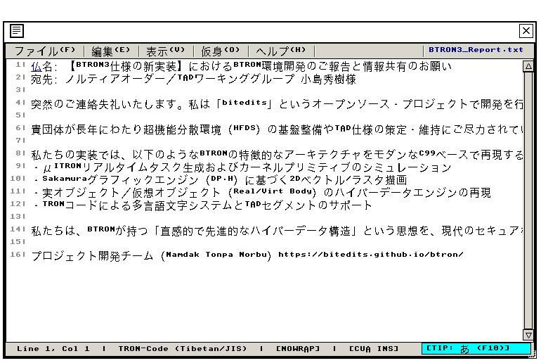
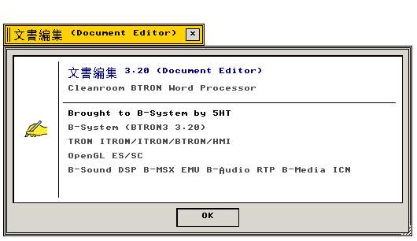
01 — Editor / TAD word processor
TRON Application Databox 準拠の標準マルチメディア・リッチテキストエディタです。TRON 多言語文字コードとインラインの図形プリミティブと仮身の埋め込みリンクを、ひとつの文書の内で混ぜて編集します。創作四題が書き出すものの読み手がこれなので、机の一等席に置いています。
The same document under the second chrome style is the middle plate: the frame changes, the text, figures and embedded virtual bodies do not.
文書形式と編集操作 →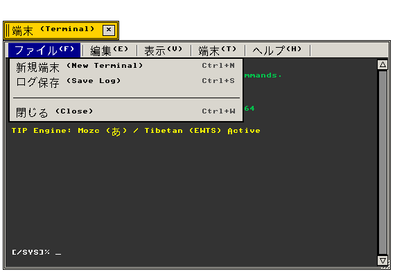
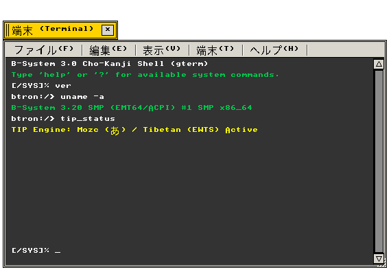
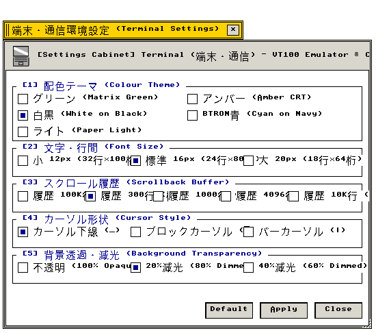
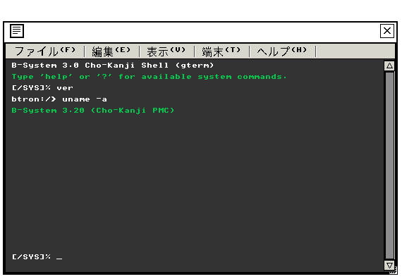
02 — Terminal / console
POSIX の CLI シェルと T-Kernel のコンソールをひとつにまとめた端末エミュレータです。ANSI 制御シーケンスと UTF-8／TRON Code、多重のカラーパレット、リング状のスクロールバックを持ちます。次の部の CLU は、この窓の中の dispatch 呼び出しから実身を駆動します。
The terminal is where the two halves of the desk meet: media products write real bodies, and the console names them.
端末エミュレータの仕様 →
03 — Browser / TAD reader
BTRON3 準拠の TAD ハイパーテキスト・電子ブック閲覧器です。ふせん移動と履歴スタックと埋め込み図形を、このページの仕様書と同じ文書モデルの上で描きます。
The document viewer that reads this site's own specification pages as native TAD records.
閲覧器の仕様 →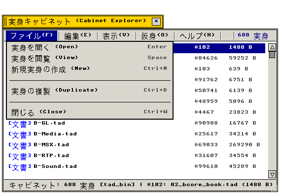
04 — Cabinet / filing
実身と仮身を、階層に縛られずに辿るファイリングマネージャです。双方向リンクの多重構造を机の上で見せ、属性インスペクタでレコードまで降ります。
Path-free filing: the hypermedia graph itself is the directory.
実身・仮身の探索 →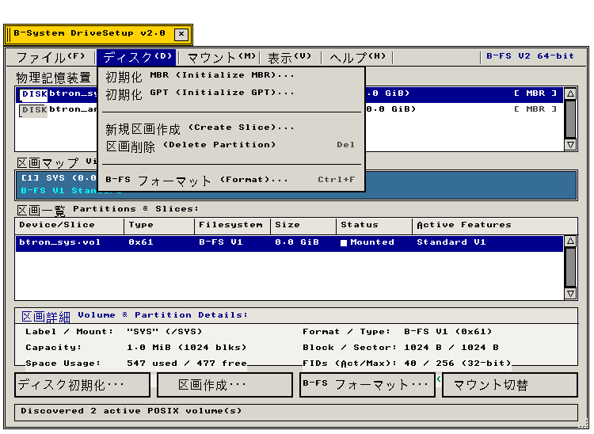
05 — Volumes / storage
POSIX の生デバイスを見つけて、MBR／GPT の区画表を初期化し、B-FS V1／V2 でフォーマットし、マウントとアンマウントをノンブロッキングで回す、純粋 C99 のストレージ管理窓です。
Everything above this row is ultimately a block on a volume this window mounted.
区画とフォーマットの仕様 →Sokhatsky Commander Suite · CLU Commands
コマンドラインから机を駆動するのが第二の部です。端末窓の中で動く四面 — Sokhatsky Commander の sc、Terminal Vision の tv、逆アセンブルを備えた Binary Editor の be、単体のシェル sh — と、gterm の dispatch が呼ぶ二十の実身動詞が、同じツリーに同じ C99 で置かれています。BusyBox や chimerautils の移植層ではありません。実身と仮身のマルチレコード構造を直接読むので、パスの代わりにふせんを一覧に出せます。
The second family is command-line: four terminal panes and twenty verbs, in the same tree as the kernel they file into. Nothing here is a port of a Unix toolbox, and that is the point — a tool that reads real-body records can show a document; a tool that reads inodes cannot.
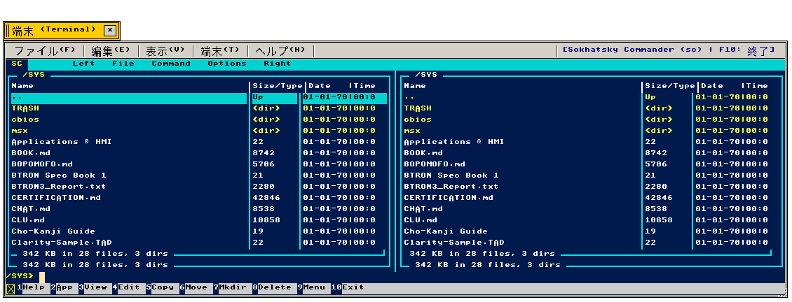
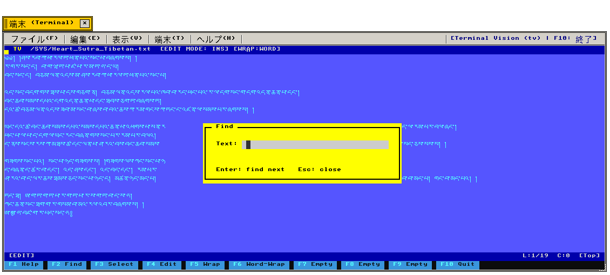
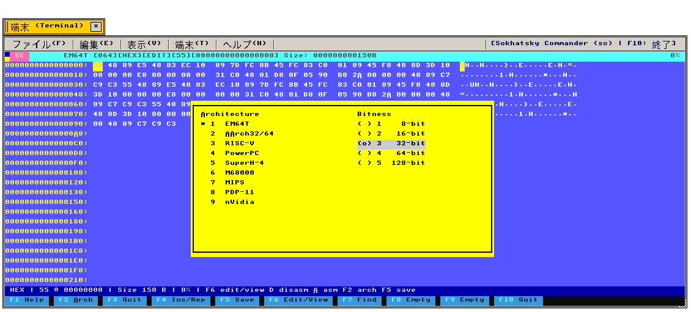
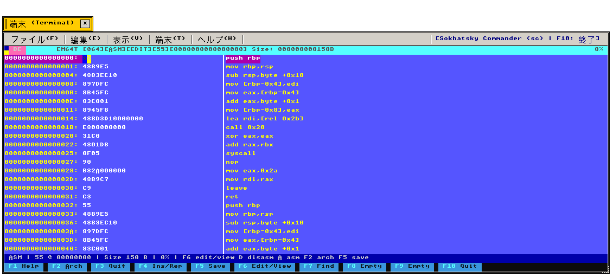
06 — Suite / Sokhatsky Commander
キーボード駆動の左右二面パネルです。sc が実身を並べ、tv が多言語と禁則処理つきで文書を読み、be が hex と五つの命令体系の逆アセンブルを同じ窓に出します。純粋 C99・NASA/JPL Power of Ten 準拠・依存ゼロで、POSIX ホストには bin/sc と bin/tv のターゲットが立っています。
sc.c、files.c、input.c、menus.c の二面パネルsrc/clu/sh/sh.c — まだ机のリンクに載らない単体出典The panes are honest about their own status: the frames came out of the running terminal window, and in-window termios embedding is still declared unavailable by the command that would start it.
ファイル管理の仕様 →gterm shell_execute_cmd → clu_verb(args, out, ud) cd ls fs stat info finfo traverse & inspect tp mkf cp ln rm ren empf move & refile apd chmod touch chtime attributes df sync quake volume · clock · launch apps clu_launch_app xmb | glgears | lilcu recs RT_PROG = 9 OBJ_EXEC 0x8000 /SYS/bin/*.elf
07 — CLU / Command Line Utilities
実身／仮身のマルチレコードを直接駆動するネイティブのコマンド群です。二十の動詞が gterm の一列の dispatch から呼ばれ、各コマンドは将来、独立したワンショット ELF（型 9 の実行プログラムレコード RT_PROG）として /SYS/bin に置かれます。MIPS R5900、ARM32／64、x86-64、M68k で同じ決定論的な動きをねらう設計です。
The rationale page puts the choice plainly: a general-purpose toolbox would have to flatten the document model before it could list it.
動詞の一覧と設計理由 →DAW · DPS · 3DS · NLE
B-System は創作を四つの専門分野として名前づけます。DAW（Digital Audio Workstation）、DPS（Desktop Publishing System）、3DS（3D System）、NLE（Non-Linear Editor）。四つはそれぞれ機械の別の場所を突きます。音は合成とデバイス遅延、組版は用紙の幾何、立体はシーングラフとフレームバッファ、映像は時間とファイル交換です。だから四つを一つの「スイート」にまとめず、それぞれに窓口とマニュアルを与えました。そして出荷済みの二題と、宣言だけの二題を同じ顔で並べず、札を分けて掲げます。
Four disciplines are named instead of one suite, because each one stresses a different contract inside the kernel. Two of them are shipping products with a complete specification page; two are announced, and their cards say so rather than borrowing the confidence of the shipped ones. The distinction is kept visible on purpose: a landing page that cannot tell a build from a plan is not documentation.
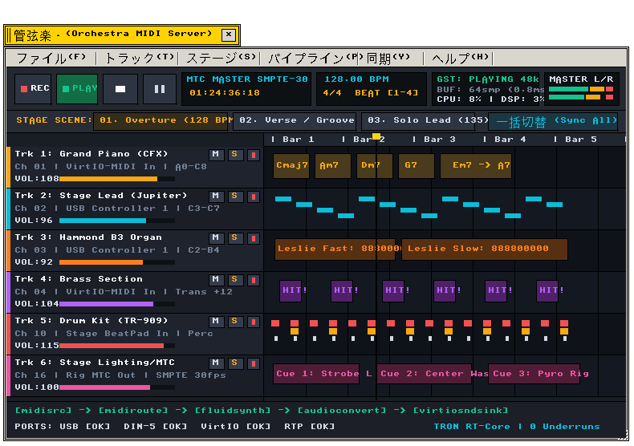
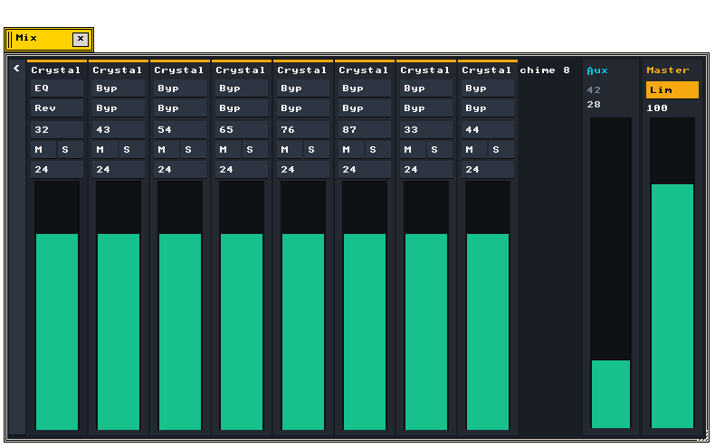
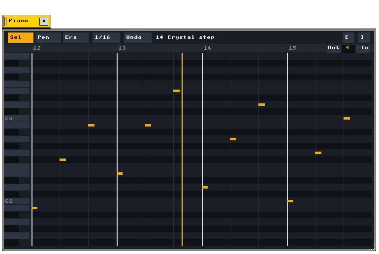
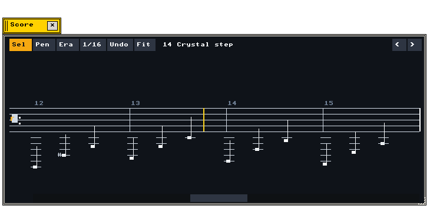
08 — DAW / Digital Audio Workstation
ステージのための DAW。使い手を Rock（生バンド）、Classic（声と古典楽器）、Orchestra（フィルハーモニー配置）の三つに固定し、三十二のプログラムをすべて手書きの合成手続きで鳴らします。 SoundFont もサンプルライブラリも使いません。窓は八つ、マニュアルは第十二章です。
Orchestra is documented as a manual rather than a feature list: twelve chapters, each one resting on the previous, with the latency figure measured from the audio queue rather than asserted.
ユーザーマニュアル →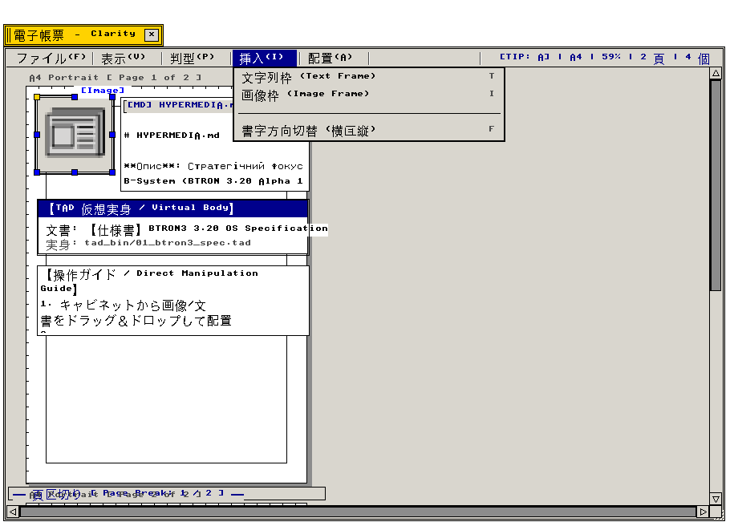
09 — DPS / Desktop Publishing System
DTP 出版組版環境。和式の伝統判型十四種と、チベット横長ペーチャ経典の組版仕様を、同じエンジン上の二つの紙として扱います。画面の像素ではなく頁の幾何が正しさの単位になる分野で、原稿リンクから印刷所入稿用 PDF までを一手順で通します。
Publishing is the discipline where geometry is the deliverable: paper formats, not pixel buffers, are what a correctness claim is made about.
機能仕様と内部構造 →10 — 3DS / 3D System
立体をつくる 3D システム。まだお届けしていません。この札に載っているのは宣言だけです。ただしかに床は動いています。B-GL は TinyGL のソフトウェアラスタライザと VirtIO-GPU（virgl）の二つを本番バックエンドとして持ち、ローポリのシーングラフは Lil Cu 64 と MSX の Geo3D が毎日すでに走らせています。
Studio is announced, not shipped. What exists is the layer it will sit on — B-GL, whose two production backends are already exercised every day by the demoscene and by MSX Geo3D titles.
基盤 B-GL の仕様 →11 — NLE / Non-Linear Editor
映像を切る非線形エディタ。こちらも届け前です。消費する側の図面はすでに書かれています。 B-Video は表示経路とフレームバッファと再生契約を、B-Media は抽象パイプラインと平面ごとの予算を定めます。編集の UI は、その図面の上にはまだ載っていません。
Cut is announced, not shipped. The display path and the pipeline contract it will consume are specified documents today; the editing interface is not.
B-Video の表示契約 → B-Media の床 →XMB · B-Game SDK · Quake · MSX · Iris · Genesis · Amiga · Ares
遊び側は八つの席です。起動のバー（XMB）、ゲームをつくる SDK、クリーンルームで書き直した軽量クライアント（Quake）、そして五つの機械 — MSX、Iris（PS2）、メガドライブ、アミーガ、Ares（N64）。この中でいちばん出来ているのは MSX です。CPU、VDP、音源、スロット、キーボード、ジオメトリ演算を別個のコアとして書き、ウィンドウマネージャに組み込み、カートリッジを窓の中の実身として読みます。Iris はエミュレータではなく、B-System が PlayStation 2 の実機そのものに起動する席です。メガドライブとアミーガと Ares は、席だけを置いています。
One launcher, one SDK, one cleanroom game client, five machine environments. One machine emulates today, one is the operating system booting on real console silicon, and three are placeholders with a directory and a name.
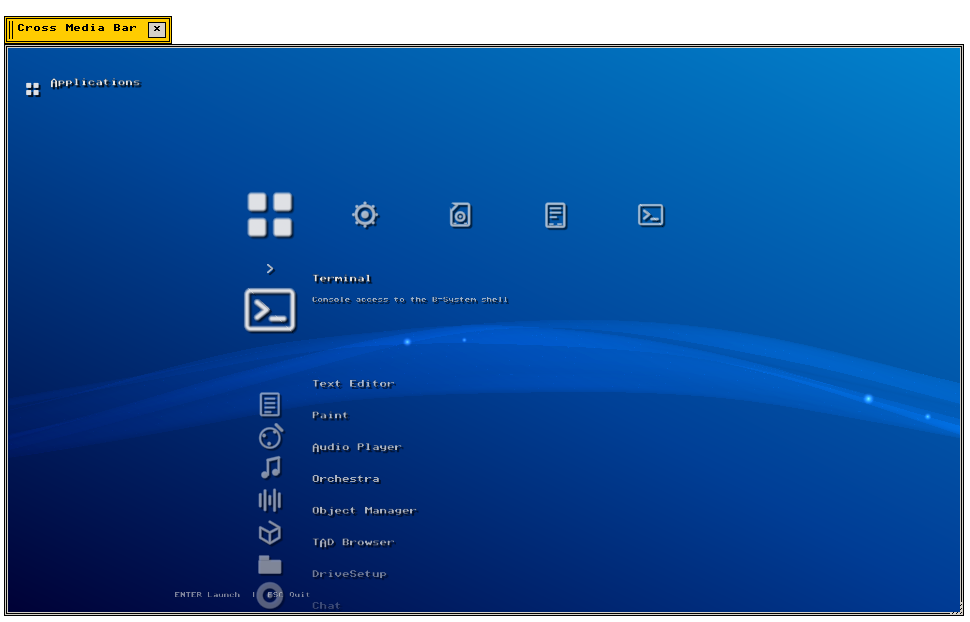
12 — Launcher
水平のカテゴリ軸と垂直のアイテム軸で行き来する、二軸クロスの統合メディアランチャーです。背景ではリアルタイムの正弦波シェーダーがうねり、実身／仮身のハイパーメディア空間を大画面・ゲームパッド・キーボードで速く閲覧し、速く実行します。
The XMB is the desk seen from ten feet away: the same document model as the editor, reached with a pad instead of a mouse.
カテゴリ構造と操作体系 →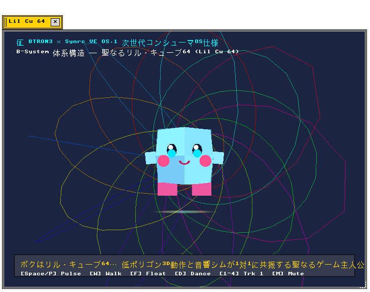
13 — B-Game SDK / B-Sound DSP
ゲームをつくるための SDK と、その上で回っているデモシーンです。ローポリの 3D 幾何とシーングラフ、運動学の状態機械、二十三種のプロシージャル音源パレットと B-Sound の DSP が、同じ窓の中で時間を共有しています。創作側と遊び側が出会うのはここです。
The SDK is where the two families meet: the hand-written synthesis procedures that Orchestra budgets for the stage are the same palette a game calls.
Game SDK の仕様 → B-Sound 合成器 →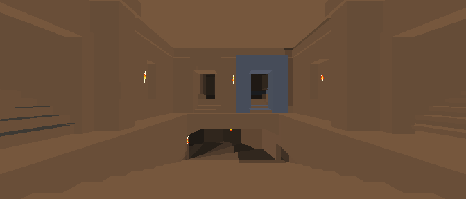
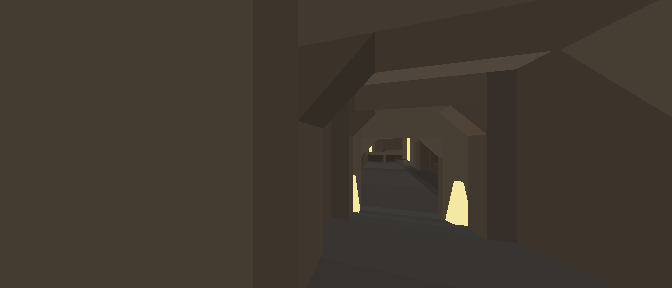
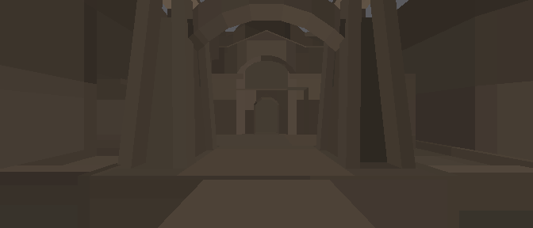
14 — Light client / Episode 1
id Software の Quake 1 に対して、クリーンルームで書き直した C99 の軽量クライアントです。約五千行をエンジン本体、VirtIO-GPU レンダラ、QuakeC のバイトコード VM、BSP ワールドの四つに分け、共有データの pak0.pak はそのまま読みます。下の図版はすべて spawn 視点から make quake-screens が自動で採ったものです。
A cleanroom client rather than a port, and the nine levels of Episode 1 are the regression suite: every frame here is produced by the build, not chosen by hand.
エンジンとレベルの仕様 →
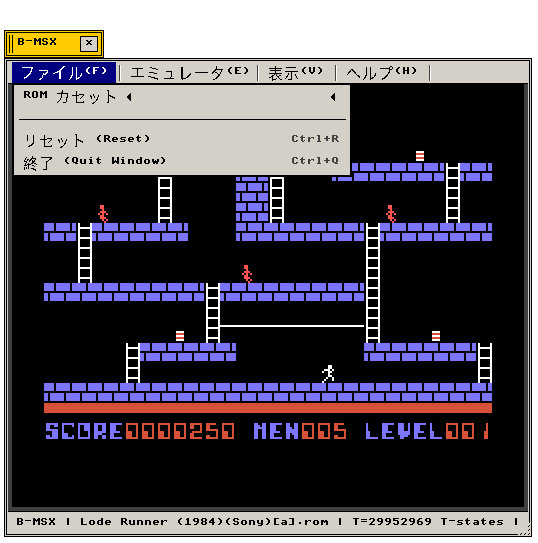
15 — Machine / MSX1 … turboR
カートリッジ実行環境。CPU、VDP、音源、スロット、キーボード、ジオメトリ演算を別個の C コアとして実装し、B-System のウィンドウマネージャに組み込みました。32 KiB のフラット ROM から 4 MiB の MegaROM、Geo3D を内蔵するタイトルまで、同じ窓から起動します。
z80.c、r800.c、geo3d.cv9938.c、vdp.cpsg.c、scc.c、y8950.c、opll.c、t9769b.cslots.c、s1985.c、ppi.c、kbd.c、bios.czexall.c が Z80 命令群を機械に検査させるMSX is the deepest emulator in the tree precisely because it is not one file: each chip is a core, each core is testable, and the window manager owns the frame the way it owns every other application.
アプリとしての仕様 → コアの設計と来源 →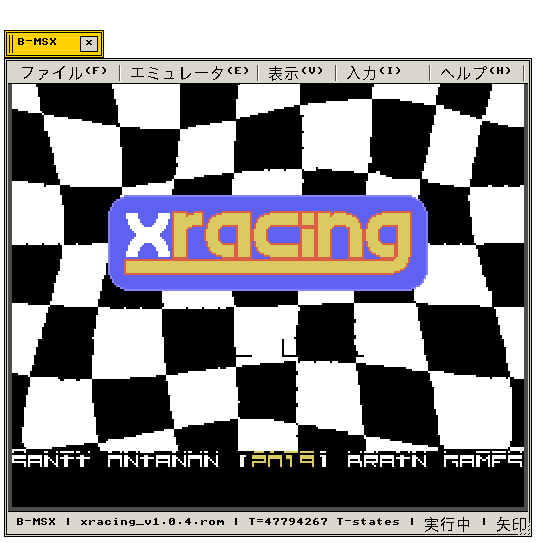
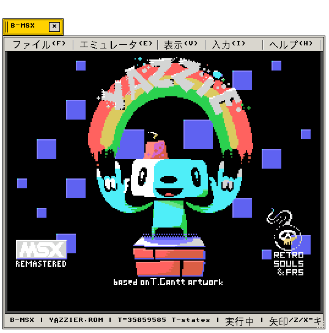
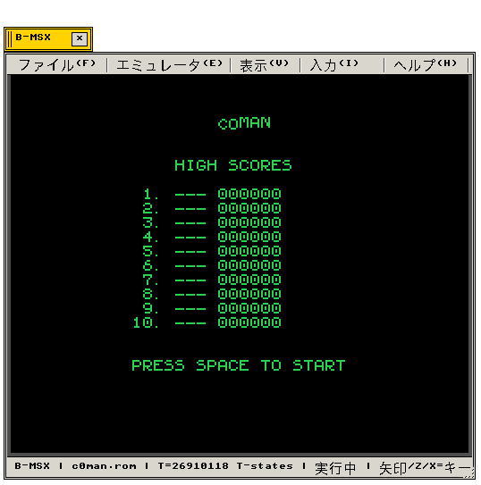
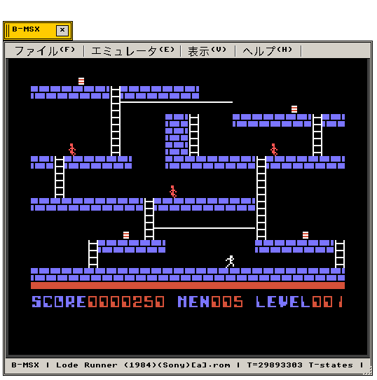
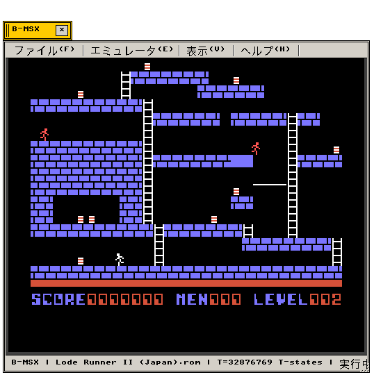
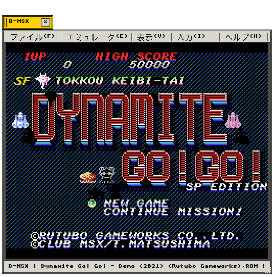
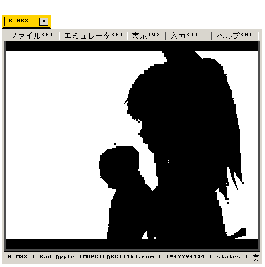
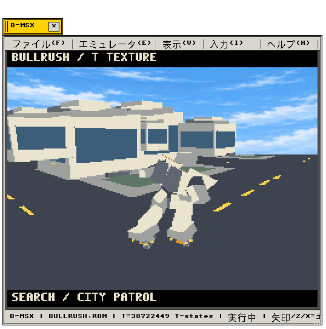
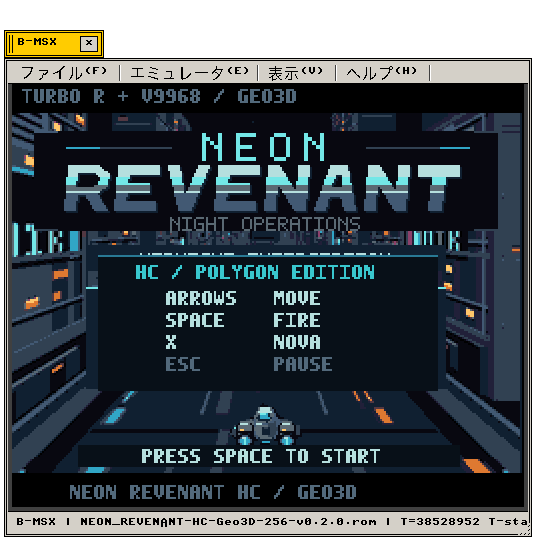
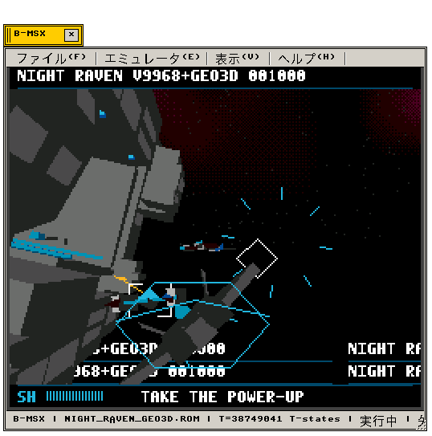
src/drivers/ps2/ boot_ps2.s entry, ps2.ld link ps2_gs.c GS framebuffer ps2_gif_ring.c GIF packets ps2_gs_pack.c ps2_gs_read.c ps2_gs_tex.c ps2_gs_vram.c ps2_vu0_kernel.c ps2_vu1_geom.vcl / .vsm ps2_vu1_geom.c microcode ps2_pad.c ps2_usb.c ps2_sio.c ps2_iopram.c ps2_irq.c make ps2 → one ISO ps2_bench.sh → guest clock | wall clock
16 — Console / native target
Iris はエミュレータではありません。B-System が PlayStation 2 の実機そのものに起動します。
GS（グラフィックスシンセサイザー）へ GIF を組む道、VU0 と VU1 の幾何パイプライン、パッドと
USB、IOP の RAM と割り込みまでが src/drivers/ps2/ にあり、make ps2
は一枚の ISO に落ちます。
boot_ps2.s と ps2.ldps2_gs.c、ps2_gif_ring.c、ps2_gs_tex.cscripts/ps2_bench.sh がゲスト内部の時間と実行側の時間を分けて採るIris is the console as host, not as guest. The same C99 sources link against PS2 silicon, and the benchmark separates the clock inside the machine from the clock outside it.
PS2 ドライバ群の位置 →17 — Machine / announced
席だけの宣言です。src/emulators/sega/ はツリーにありますが、中には空の目印だけが置いてあります。68000 のコアも、VDP の再現も、まだ書かれていません。
Genesis is a reserved seat. No core, no frame, no screenshot.
18 — Machine / announced
同じく席だけです。src/emulators/amiga/ は空の目印を持つプレースホルダです。なお 68000 系の CPU そのものはカーネルの側に存在します。src/cores/core_m68k.c
は Motorola 68040 上の BTRON カーネルで、アミーガのエミュレーションではありません。
Amiga is a reserved seat. The 68040 kernel port elsewhere in the tree runs B-System on that CPU family; it is not an Amiga.
19 — Machine / plan only
計画段階の名前です。ツリーには何もありません。B-GL のロードマップが四つのハードウェアバックエンドを掲げるなかで、N64 はその訪問先として名前を残しています。
Ares is a name on a roadmap. Nothing in the tree backs it yet, and the card keeps that visible instead of implying a feature.
B-GL のロードマップ →Four constants · one audio path · one window contract
十九の札は、四つの数と、一本の音の道と、一つの窓の約束でできています。システム五窓もコマンドライン二席も創作四題もゲーム八席も、同じ平面予算の中で動き、同じ交互 PCM を同じデバイスに書き、同じ実身／仮身の文書モデルを読みます。だから十九は別々の製品の寄せ集めではなく、同じ約束の十九の使い方です。
The nineteen tiles are made of four constants, one audio path and one window contract. System windows, command line, authoring and playing all share the per-plane CPU and buffer budgets, the same interleaved PCM written to the same device, and the same real-body / virtual-body document model. That is why four bands are one operating system rather than a bundle — and every number on this page is readable in the sources it comes from.
どの札も、デスクの上の窓です。まずワークベンチを開き、次に使うものをひとつ選んでください。文書編集で一行書き、端末で sc を呼んで二面パネルを開き、オーケストラで一曲取り、電子帳票で一頁組み、ゲームシステムでカートリッジを一本回す。そのどれにも、このページがリンクした先に、窓口と操作と内部構造の順番をもった仕様書があります。
Every tile is a window on one desk. Open the Workbench and choose one thing — write a line, call sc from the terminal, record a piece, set a page, run a cartridge — and the specification behind that tile is ordered the same way: what the window is, how it is operated, and how it is built.